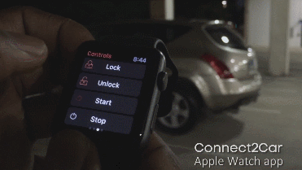

CONNECTED MOBILE APP

Both Android and iOS software solutions to connect a smartphone with a car.CarPlay and Android Auto apps transmit the home screen of any Android or iOS
smartphone to the car built-in display.Therefore,apps installes on the connected smartphone will become available on car screen.Sometimes car apps require
additional hardware which plug into the OBD port to record,collect and provid the data about engine errors.Some apps along with additional hardware give keyless
access to the car and let the owner start the engine using a smartphone .Drivers can install a dash cam app and use the smartphone to capture the driving process.
The information about owners driving habits can be recorded by car software with the help of OBD port.If vehicle speedmeter is not functioning properly can app
can provide accurate car speed.Car software collects live data about road sign,speed limit and traffic camera head.Some car app send real time notification about
rosd accident,traffic jams root.